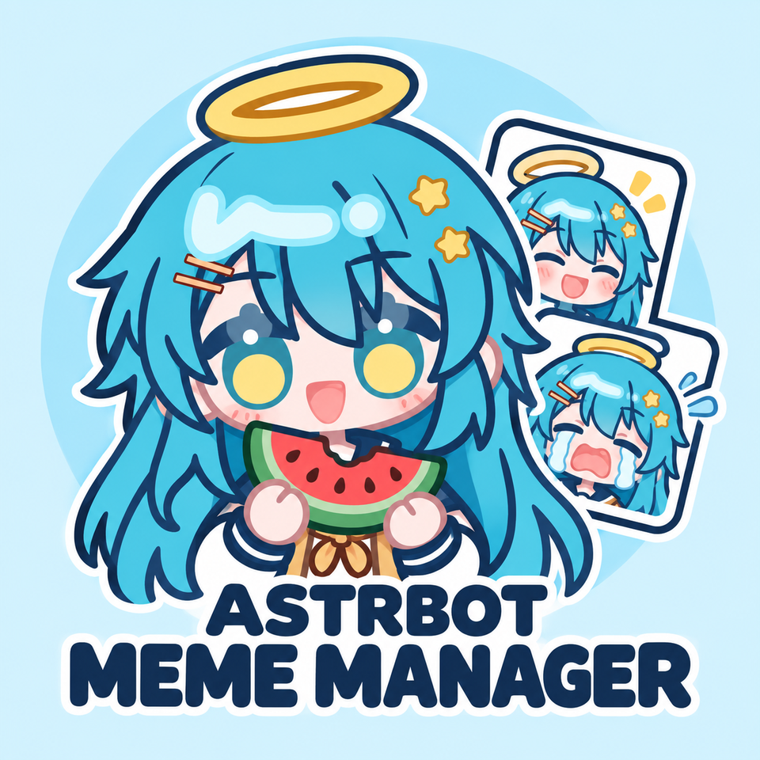

资源列表 —
正在加载资源列表…
没有匹配的表情包
换个关键词，或清除筛选条件。
资源列表加载失败
请检查网络后重试。
安装和使用
查看完整指南 ↗- 01
安装插件
在 AstrBot 插件市场搜索并安装「表情包管理器」。
- 02
安装表情包
打开插件资源广场，按名称安装；也可复制本页来源，使用「从 GitHub 安装」。
- 03
设置使用规则
在「设置中心 → 使用规则」中选择表情包并保存。
提交社区表情包
按表情包规范整理资源后，向社区索引提交 PR 或 Issue。

AstrBot 表情包广场正在加载资源列表…
换个关键词，或清除筛选条件。
请检查网络后重试。
在 AstrBot 插件市场搜索并安装「表情包管理器」。
打开插件资源广场，按名称安装；也可复制本页来源，使用「从 GitHub 安装」。
在「设置中心 → 使用规则」中选择表情包并保存。
按表情包规范整理资源后，向社区索引提交 PR 或 Issue。